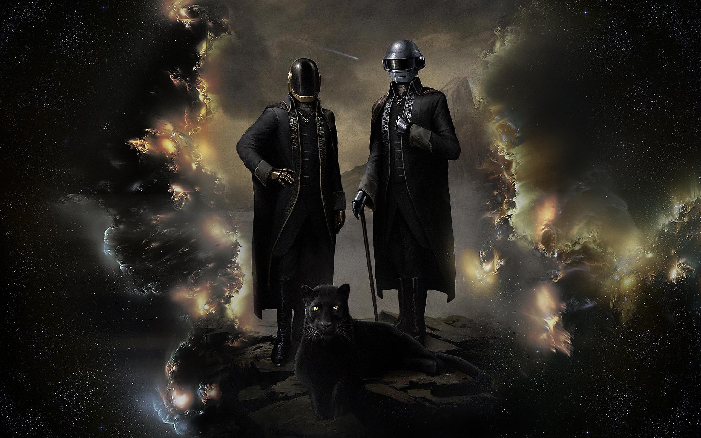

En esta Web encontraras escritos,citas y proposiciones de textos que describen la caoticamente de un heraldo de la luz
POEMOS CANTORES
Al igual que todas los poemos celebremente aclamados a traves de los siglos, los poemos cantores transmiten la energia y animidad de los hechos epicos ocurridos